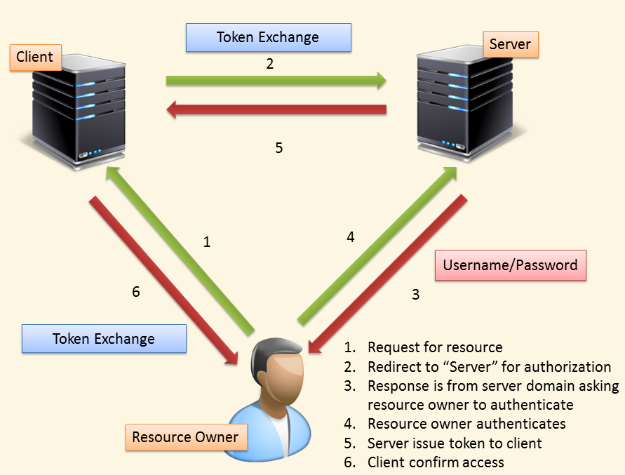

Social Network ANnalysis With R
David Chiu @ 中興大學
About Me

- Co-founder of NumerInfo
- Trend Micro Engineer
- ywchiu-tw.appspot.com
Agenda
- What is Social Network?
- Why Analyze Social Network?
- How to Analyze
- Social Network Connection (Oauth, Oauth2)
- Social Network Analysis (Network Graph)
- Social Network Graph
- Conclusion
Social Network

http://libeltyseo.com/wp-content/uploads/2013/03/social-networking.png
Human Nature
http://cdn.macado.com/assets/2010/03/peeping-tom.gif
What do we want to know?
- Who knows whom, and which people are common to their social networks?
- How frequently are particular people communicating with one another?
- Which social network connections generate the most value for a particular niche?
- How does geography affect your social connections in an online world?
- Who are the most influential/popular people in a social network?
- What are people chatting about (and is it valuable)?
- What are people interested in based upon the human language that they use in a digital world?
Lesson 1: Connect to Social Network
- OAuth Flow
- Oauth v.s. OAuth2
OAuth Flow

Difference Between OAuth and OAuth2
- More OAuth Flows to allow better support for non-browser based applications
- OAuth 2.0 no longer requires client applications to have cryptography
- OAuth 2.0 signatures are much less complicated
- OAuth 2.0 Access tokens are "short-lived"
- OAuth 2.0 is meant to have a clean separation of roles between the server responsible for handling OAuth requests and the server handling user authorization
Big Data Era
Quick analysis, finding meaning beneath data.
Data Analysis
- Preparing to run the Data (Munging)
- Running the model (Analysis)
- Interpreting the result